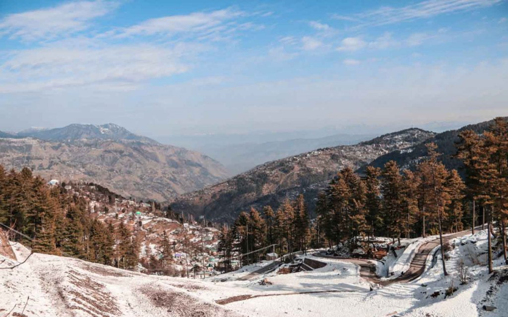

Introduction
Ayubia National Park is a protected area located in Abbottabad District, Khyber Pakhtunkhwa. Established in 1984, it covers an area of 3,312 hectares. The park is a cluster of four hill stations: Khanspur, Ghora Dhaka, Changla Gali, and Khaira Gali. It is named after the late President Muhammad Ayub Khan and is famous for its dense coniferous forests and the historic Pipeline Walking Track.
Landscapes & Ecosystems
The park lies at an elevation of 8,000 feet above sea level. It is characterized by moist temperate forests, dominated by species like Cedar (Deodar), Blue Pine, Silver Fir, and Oak. The landscape is mountainous with steep slopes and valleys, offering cool weather in summer and heavy snowfall in winter.
Biodiversity And Wildlife
Ayubia is rich in biodiversity. It is home to the Common Leopard, Yellow-throated Marten, Kashmir Hill Fox, and Flying Squirrel. The park is also a birdwatcher's paradise, hosting over 200 species of birds, including the Golden Eagle and the Koklass Pheasant.
Location On Map
Conservation Efforts
The park management focuses on protecting the forest from illegal logging and encroachment. Efforts are also made to manage the high influx of tourists to prevent littering and disturbance to wildlife. The park serves as an important carbon sink and watershed for the region.